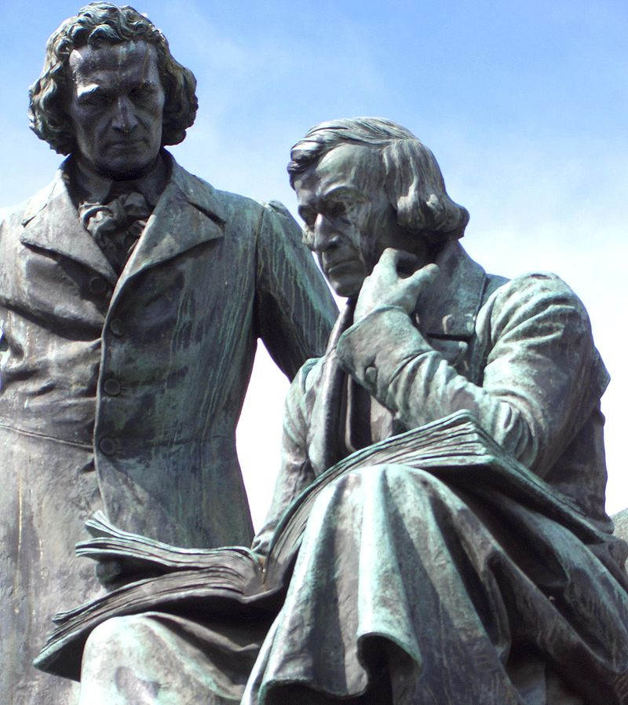
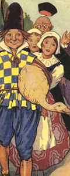

.cover.jpg)
Fraţii Grimm (în germană Gebrüder Grimm), Jacob (1785–1863) şi Wilhelm Grimm (1786–1859), au fost folclorişti, lingvişti, filologi, doctori în drept, cunoscuţi în toată lumea pentru colecţia de basme publicată în două volume, care conţine, printre altele, Albă ca zăpada, Croitoraşul cel viteaz, Cenuşăreasa, Scufiţa roşie şi Hansel şi Gretel (primul volum a apărut în 1812, iar al doilea volum în 1814). Poveştile scrise de cei doi fraţi au încântat copilăria multor generaţii, devenind pretexte cuceritoare pentru diverse ecranizări şi dramatizări.[1] Fraţii Grimm şi-au adus contribuţia la formarea limbii germane, în special prin dicţionarul Deutsches Wörterbuch (Cartea cu cuvinte germane) pe care l-au scris împreună şi prin prima carte de fonetică/fonologie a limbii germane, Legea lui Grimm, scrisă doar de Jacob. Dicţionarul Fraţilor Grimm avea 33 de volume şi cântărea 84 kg.
Frații Grimm (în germană Gebrüder Grimm), Jacob (1785–1863) și Wilhelm Grimm (1786–1859), au fost folcloriști, lingviști, filologi, doctori în drept, cunoscuți în toată lumea pentru colecția de basme publicată în două volume, care conține, printre altele, Albă ca zăpada, Croitorașul cel viteaz, Cenușăreasa, Scufița roșie și Hansel și Gretel (primul volum a apărut în 1812, iar al doilea volum în 1814). Poveștile scrise de cei doi frați au încântat copilăria multor generații, devenind pretexte cuceritoare pentru diverse ecranizări și dramatizări.[1] Frații Grimm și-au adus contribuția la formarea limbii germane, în special prin dicționarul Deutsches Wörterbuch (Cartea cu cuvinte germane) pe care l-au scris împreună și prin prima carte de fonetică/fonologie a limbii germane, Legea lui Grimm, scrisă doar de Jacob. Dicționarul Fraților Grimm avea 33 de volume și cântărea 84 kg.
La 20 decembrie 1812 Frații Grimm au publicat primul volum din colecția de basme Kinder- und Hausmärchen („Povești pentru copii și familie”), conținând 86 de povești[3]; al doilea volum, conținând alte 70 de povești, a apărut în 1814.[4]
Apariția romantismului în secolul al 19-lea a reîmprospătat interesul pentru poveștile din folclor și a reprezentat o formă pură de literatură și cultură națională pentru cei doi frați. Cu scopul de a întocmi un tratat academic asupra basmelor populare, frații au stabilit o metodologie pentru culegerea și înregistrarea acestora, metodologie care a devenit baza studiilor folclorice. Prima lor culegere a fost revizuită și publicată de mai multe ori între anii 1812 și 1857, crescând de la 86 de povești până la mai mult de 200. Pe lângă scrierea și adaptarea basmelor, frații au scris culegeri respectate de mitologie germană și scandinavă iar în 1808 au început să lucreze la un dicționar german de referință (Deutsches Wörterbuch – Cartea cu cuvinte germane – 33 de volume cântărind 84 kg), care, însă, a rămas neterminat până la sfârșitul vieților lor. Jacob Grimm a publicat prima carte de fonetică/fonologie a limbii germane - Legea lui Grimm.
Popularitatea poveștilor culese de frații Grimm a rămas intensă mult timp după dispariția lor fizică. Acestea pot fi citite în mai mult de 100 de traduceri și au fost adaptate de cineaști precum Lotte Reiniger, și Walt Disney, cu filmele „Albă ca zăpada și cei șapte pitici” ("Snow White and the Seven Dwarfs") și „Frumoasa din padurea adormită” ("Sleeping Beauty"), printre altele. Spre mijlocul secolului XX poveștile au fost folosite în scopuri propagandiste de către cel de-al Treilea Reich. Mai târziu, în același secol, psihologi precum Bruno Bettelheim au reafirmat valoarea basmelor fraților Grimm, în ciuda cruzimii și violenței din versiunile originale ale unora dintre basme (ce au fost de atunci adaptate în acest sens).

A fost odata un om si omul acela avea trei feciori. Pe cel mai mic dintre ei il poreclisera Prostila si-l luau in ras si-l umpleau de ocari ori de cate ori aveau prilejul. Intr-o buna zi, cel mai mare dintre frati vru sa se duca in padure sa taie lemne si, mai inainte de a pleca, maica-sa ii puse in traista un cozonac bine rumenit si tare gustos si-o sticla cu vin ca sa aiba cu ce-si potoli setea si foamea. Si cum ajunse in padure, flacaul se si intalni cu un omulet batran si tare carunt. Dupa ce-i dadu binete, omuletul prinse a se ruga de el:
- Mai baiete, da-mi si mie o bucatica din cozonacul tau si lasa-ma sa sorb o inghititura de vin, ca nu mai pot de foame si sete si ma simt sleit! Vezi insa ca flacaul se tinea ca-i destept si se rasti la omulet:
- Da stii ca n-ai pretentii mari!...Pai daca ti-oi da din cozonacul si din vinul meu, mie ce-mi mai ramane? Vezi-ti de drum si nu mai supara oamenii cersind!... Si lasandu-l in plata domnului pe omulet, isi vazu de drum mai departe. Ajunse la locul cu pricina si se apuca imediat de lucru. Dar in timp ce se caznea sa doboare un copac, loviturile cadeau anapoda; si ca un facut ii scapa securea din mana si nimeri cu taisul in brat, de trebui s-o porneasca din nou spre casa, sa-si lege rana. Vezi ca patania asta i se trasese de la omuletul cel carunt. Cind fu sa plece la padure cel de-al doilea fecior, maica-sa ii puse-n traista, ca si celuilalt, un cozonac gustos si o sticla cu vin. Omuletul cel carunt indata-i iesi in cale si-i ceru si lui o bucata de cozonac si o inghititura de vin. Dar mijlociul se rasti la el ca si fratele sau cel mare:
- Ei, asta-i buna!... Pai daca ti-oi da si tie n-o sa-mi mai ramana nici pe-o masea, asa ca vezi-ti de drum si nu mai supara oamenii degeaba! Si lasandu-l in plata domnului pe omulet, nici ca se mai sinchisi de el si-si vazu de drum mai departe. Dar pedeapsa nu intarzie sa vina: dupa ce izbi de cateva ori cu securea in trunchiul unui copac, se vatama asa de rau la un picior, ca trebui sa se duca acasa. Vazand ce se intamplase cu fratii sai, Prostila isi puse in gind sa incerce si el. Si incepu a se ruga de taica-sau: - Taica, lasa-ma si pe mine sa ma duc o data in padure la taiat lemne! Si taica-sau ii raspunse:
- N-ai vazut ce au patimit fratii tai de pe urma asta? Lasa-te pagubas, baiete, ca nu ai tu cap pentru astfel de treburi!... Dar Prostila, nu si nu, ca el vrea sa se duca. Statui intr-atata, ca pana la urma taica-sau trebui sa incuviinteze.:
- Ei, atunci du-te! Ca de cate-i patimi, poate-o sa-ti vina si tie minte la cap! Maica-sa ii dadu si lui un cozonac, dar vezi ca il plamadise numai cu apa si il copsese in spuza! Si-i mai puse in traista si o sticla cu bere inacrita!... Cand ajunse praslea in padure, se intalni si el cu omuletul cel batran si carunt. Dupa ce-i dadu binete, mosneagul prinse a se ruga de el:
- Mai, flacaias, mai, da-mi si mie o bucata din cozonacul tau si lasa-ma sa sorb o inghititura de vin din sticla ta, ca nu mai pot de foame si de sete! Prostila lua aminte la vorbele omuletului si-i raspunse cu blandete:
- Mosnegelule draga, n-am in traista decat un cozonac copt in spuza si o sticla de bere acra, dar daca-ti suunt pe plac bucatele astea, n-ai decat sa te asezi colea langa mine, sa ne ospatam impreuna. Se asezara ei pe iarba si cand scoase Prostila merindele din traista, odata-mi facu niste ochi, si cum sa nu faca!- daca vazu dinainte-i un cozonac galben-galben, de parca ar fi fost plamadit numai cu oua, si daca baga de seama ca berea se preschimbase in vinul cel mai de soi!... Mancara ei si baura pana ce se saturara si la sfarsit omuletul zise:
- Fiindca mi-ai dovedit inima buna si din putinul tau esti bucuros sa imparti cu altii, sa stii ca am sa te fac fericit! Uite, vezi copacul cel batran de colo? Apuca-te de-l doboara si vei gasi ceva la radacina lui. Acestea zicand, omuletul isi lua ramas bun si-si vazu de drum. Prostila dobori copacul si gasi la radacina lui o gasca cu penele numai si numai de aur.
O lua sub brat si se indrepta cu ea spre hanul unde gandea sa ramana peste noapte. Hangiul avea trei fete, care, de indata ce vazura gasca, nu-si mai aflara locul de curioase ce erau. Ardeau de nerabdare voind sa afle cat mai degraba ce sart are pasarea asta minunata si de soi. Si ar fi dat tustrele orice, numai sa se aleaga fiecare cu cate o pana de aur. Fata cea mare privea la gasca cu jind si zicea in sinea ei: "Lasa ca gasesc eu prilej sa pot smulge o pana." Si cand Prostila iesi afara pentru o clipa, fata isi lua inima-n dinti si apuca gasca de-o aripa. Dar vezi dracie: degetele ii ramasera prinse de pene!... Putin dupa aceea veni si cea mijlocie, cu gand sa smulga si ea o pana de aur. Dar abia se atinse de sora-sa, ca si ramase agatata de ea. Cand o vazu venind si pe cea de-a treia, care nutrea si ea acelasi gand, cele doua surori mai mari strigara la ea:
- Nu te apropia, pentru numele Domnului, nu te apropia!... Dar fata nu pricepu de ce ii tot strigau surorile ei sa nu se apropie de gasca si gandea in sinea ei: "Daca ele s-au putut duce, de ce nu m-as putea duce si eu?" si se repezi spre gasca. Dar abia o atinse pe una dintre surorile ei, ca si ramase agatata de ea. Astfel, catestrele trebuira sa-si petreaca noaptea alaturi de zburatoarea cu pene de aur. A doua zi, Prostila isi lua gasca la subsoara si o porni la drum , fara sa se sinchiseasca de cele trei fete care erau agatate de ea. Si bietele fiice ale hangiului trebuia sa o tina tot intr-o fuga dupa Prostila, fie c-o lua la dreapta, fie c-o lua la stanga, oriincotro il duceau picioarele. ... Cand ajunsera in mijlocul unei campii, numai ce se intalnira cu-n popa care tocmai trecea si el pe acolo. Zarind popa o asemenea blestematie, incepu sa strige ca in gura de sarpe:
- Necuviincioaselor, nu va e rusine sa va tineti scai dupa un flacau? Oare se cuvine sa faceti una ca asta?... Si dupa ce le mustrului in lege, o apuca pe cea mai mica de mana cu gand s-o opreasca. Dar de indata ce o atinse, ramase si el agatat si, de voie, de nevoie, trebui sa alerge si el in rand cu catestrele. Merse ei ce mersera, dar nu prea mult si in calea lor se ivi dascalul, care se minuna grozav cand il vazu pe preot alergand cat il tineau picioarele in urma a trei fete...
- Ei, parinte, incotro grabesti asa tare?!... ii striga el. Nu cumva sa te iei cu altele si sa uiti ca mai avem azi un botez!... Acestea zicand se repezi la preot sa-l traga de maneca, dar ramase si el agatat... Cum alergau ei asa toti cinci, agatati unul de altul de parca ar fi fost insirati pe-o sfoara, numai ce le trecura pe dinainte doi tarani ce veneau de pe camp, cu sapele pe umeri. Preotul ii stiga de departe, rugandu-i sa-l scape pe el si pe dascal de pacostea asta. Dar indata ce-l atinsera taranii pe dascal, ramasera si ei agatati. Ei, comedie mare, sapte insi se insirau acum dupa Prostila, care zorea cu gasca la subsuoara!...Mersera ei ce mersera si intr-un sfarsit ajunsera intr-o cetate mare, unde domnea un imparat care avea o fiica, numai buna de maritat. Si era fiica imparatului atat de sanchie si de ursuza din fire, ca nimeni pana atunci n-o putuse face sa rada. Din aceasta pricina imparatul daduse o pravila in care sta scris ca acela care o va face pe domnita sa rada, o va lua de sotie. Auzind acestea, Prostila se infatisa inaintea fetei, cu gasca la subsoara si cu tot alaiul nastrusnic dupa el. Si cand ii vazu domnita pe toti sapte alergand in urma lui Prostila, de parca ar fi fost insirati pe-o sfoara, odata izbucni intr-un hohot de ras, si rase cu atata pofta, ca nu mai fu chip sa se opreasca. Si daca vazu Prostila ca implinise porunca imparatului, cuteza sa-i ceara fata de nevasta, asa cum sta scris in pravila. Numai ca imparatului nu-i prea era pe plac ginerele si nascocea fel si fel de chichite ca sa scape de el. Pina la urma ii zise ca i-o va da de nevasta pe fie-sa numai atunci cand ii va aduce pe cineva care sa fie in stare sa bea tot vinul care ar incapea intr-o pivnita. Prostila se gandi ca omuletul din padure i-ar putea veni in ajutor cu un sfat de folos. Pori deci intr-acolo si cand ajunse zari un om care sedea jos , taman pe locul unde doborase copacul, si parea sa fie tare amarat. Prostila il intreba ce tot are pe inima de sta catranit si omul raspunse:
- Cum as putea sa fiu altfel daca ma chinuie o amarnica de sete si n-am cu ce o stinge? Iar de apa, cat ar fi ea de rece, nu ma pot atinge, pentru ca nu-mi prieste defel! E drept ca adineauri am golit un butoi cu vin, dar ce inseasmna o picatura la setea care ma frige pe mine? E taman ca o picatura de apa pe o piatra infierbantata, zau, asa! - Pai daca-i numai asta, atunci afla ca-mi sta in putinta sa-ti astampar setea, ii zise Prostila. Hai, fratioare cu mine, si o sa bei pana n-o sa mai poti!... Il duse apoi in pivnita imparatului si omul nostru se infipse langa butoaiele cele mari si, luandu-le la rand, bau de stinse, pana ce incepura a-l durea salele, nu alta... Nici nu trecuse bine ziua si secase vinul din toate butoaiele. Prostila se duse la curte si-i ceru din nou imparatului sa-i dea fata de nevasta. Dar ti-ai gasit sa i-o dea! ...Sadea catranit toata vremea si nu-i venea deloc sa-si marite odrasla dupa un neispravit ca acesta, caruia toata lumea ii zicea Prostila. Si ca sa scape de el, il mai puse la o incercare. Cica trebuia sa gaseasca un om care sa fie-n stare sa manance un munte de paine. Prostila nu statu mult pe ganduri, ci porni imediat la drum. Cand ajunse in padure, in acelasi loc unde doborase copacul, zari un om cu o mutra necajita, care-si tot strangea cureaua peste burta, vaicarindu-se intruna: - vai de maiculita mea, am infulecat un cuptor intreg de paine, dar ce-mi poate ajunge doar un cuptoras cand sunt lihnit de foame?!... Prin burta imi fluiera vantul si trebuie sa-mi strang tot mereu cureaua ca sa nu cad de-a-n picioarelea!... Auzind acestea, prostila se bucura tare mult si-i zise:
- Mai, frate-miu, hai de te scoala si vino cu mine , c-o sa-ti dau sa mananci pana te-i ghiftui!... Ajunsera ei in cetatea imparateasca si ce sa vezi acolo: din faina care se stransese din intreaga imparatie, imparatul daduse porunca sa se faca un munte urias de paine. Paduretul cel hamesit de foame se aseza la poalele muntelui de paine si incepu sa infulece din el , de parca se bateau turcii la gura lui. Intr-o singura zi n-avu ce alege din muntele de paine; si cand se lasase seara nu mai ramasese din el nicio faramita... Daca vazu asta Prostila, ii ceru pentru a treia oara imparatului sa-i dea fata de nevasta, dar acesta cauta sa umble si de asta-data cu fofarlica, doar, doar o scapa de el. Si in cuvinte mieroase il indemna sa-i aduca la curte o corabie atat de nazdravana, incat sa pluteasca si pe apa si pe uscat.
- Cand te-oi vedea venind cu corabia la curtea palatului, ii mai zise el voind sa dea vorbelor un anume inteles, sa stii ca nu voi mai avea nicio pricina de impotrivire si ti-oi da fata de nevasta pe loc.
Prostila porni iar in padure spre locul cu pricina si aici il gasi pe omuletul cel batran si carunt pe care-l ospatase din putinele lui bucate. Si batranul, ascultandu-i pasul, ii grai astfel:
- Am mancat si am baut, acum am sa-ti dau si corabia! Acestea toate ti s-au cuvenit pe drept, fiindca n-am putut sa-ti uit bunatatea si mila pe care mi le-ai aratat la nevoie. Si omuletul cel batran si carunt ii darui corabia nazdravana, care, pasamite, plutea si pe apa, si pe uscat. In clipa cand Prostila i-o aduse pesches imparatului, acesta nu mai avu ce sa zica - vezi bine ca i se dusesera pe apa sambetei toate siretlicurile - si-i dadu fata de nevasta. Si se facu o nunta ca-n povesti; iar dupa moartea imparatului, Prostila urca in scaunul domnesc si trai in fericire, pana la adanci batraneti, alaturi de nevasta lui.